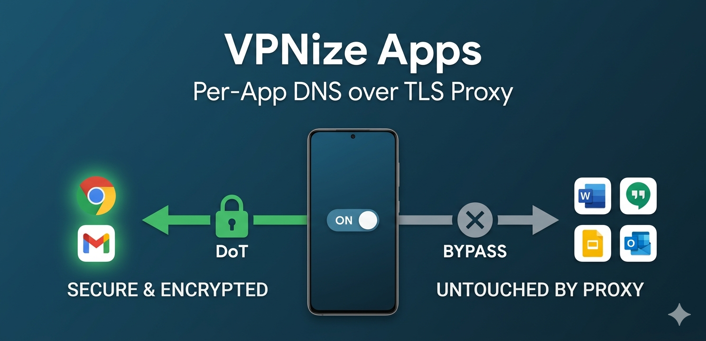

VPNize Apps
Route specific apps through secure DoT (DNS over TLS).
Route specific apps through secure DoT (DNS over TLS).
Take absolute control over your device's DNS traffic on an app-by-app basis!

"I want to secure my private browsing with high-security DoT, but leave my corporate work apps completely untouched."
"I need to encrypt DNS queries for specific apps without routing my entire device's traffic through a third-party server."
VPNize Apps is a lightweight, secure utility designed for developers and privacy-conscious users who need precise control over their DNS over TLS (DoT) routing. By utilizing Android's native "VpnService", the app creates an isolated, on-device local VPN environment, allowing you to selectively encrypt and route DNS queries for specific applications at the OS level.
Strict Whitelist: By default, all apps are bypassed. Only the specific applications you explicitly check in the UI will have their DNS queries routed through the designated DoT server.
DoT encrypts your DNS queries over Port 853. This prevents eavesdropping and tampering on untrusted networks. Supports custom DoT hostnames.
A prominent switch allows you to instantly start or stop the local VPN service. Activate secure routing precisely when you need it.
Private IP ranges (192.168.x.x, etc.) are automatically excluded, ensuring you can still access local NAS or smart home devices.
Operates as a Foreground Service with a persistent notification. Supports system "Always-on VPN" and auto-start on reboot.
The VPN tunnel established by this app is a purely "local VPN" that operates entirely inside your smartphone. Unlike commercial VPN services, your internet traffic is never forwarded to an external remote proxy server.
VPNize Apps does not collect, log, or externally transmit any of your personal data or app traffic. The app requires zero unnecessary permissions—no location, no contacts, and no storage access are requested.